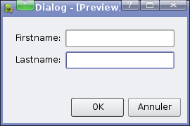
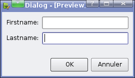
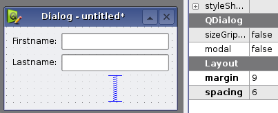
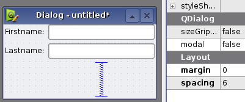

Maybe it's just me, but I highly dislike it when the content of a dialog is not aligned with the line of buttons at the bottom. I mean, when it looks like that:

Instead of looking like this:

I think it really looks unpolished.
Unfortunately, it's easy to fall in this trap with KDialog, because when you create your dialog in Designer you don't work with the full dialog, but only with its content. In Designer your dialog looks like this:

It looks ok, but it's not, because KDialog adds its own margin, resulting in double margins for the content, but not for the KDialog buttons.
One way to fix it is to set your the margin of the content layout to 0, like this:

It doesn't look good in Designer, but will look correct in real, which is what really matters.
This solution has a drawback though: Say you set the margin to 0, it now looks ok. A week later, you realize you need to rework the content of the dialog in a way which requires you to break the content layout. After you have recreated it, you need to set the margin back to 0 again. It is not only tedious, but you are bound to forget this at least once.
A better solution is to do it in the code. Assuming your dialog creation code is similar to this:
KDialog *dialog = new KDialog(this); QWidget *widget = new QWidget(dialog); Ui_Content *ui = new Ui_Content; ui->setupUi(widget); dialog->setMainWidget(widget); dialog->show();
Just change it to this:
KDialog *dialog = new KDialog(this); QWidget *widget = new QWidget(dialog); Ui_Content *ui = new Ui_Content; ui->setupUi(widget); widget->layout()->setMargin(0); /* <- Add this line */ dialog->setMainWidget(widget); dialog->show();
Now, you never have to think about setting the margin to 0 in Designer. As a bonus, the dialog will now look better in Designer too, since you can leave the default margin value.